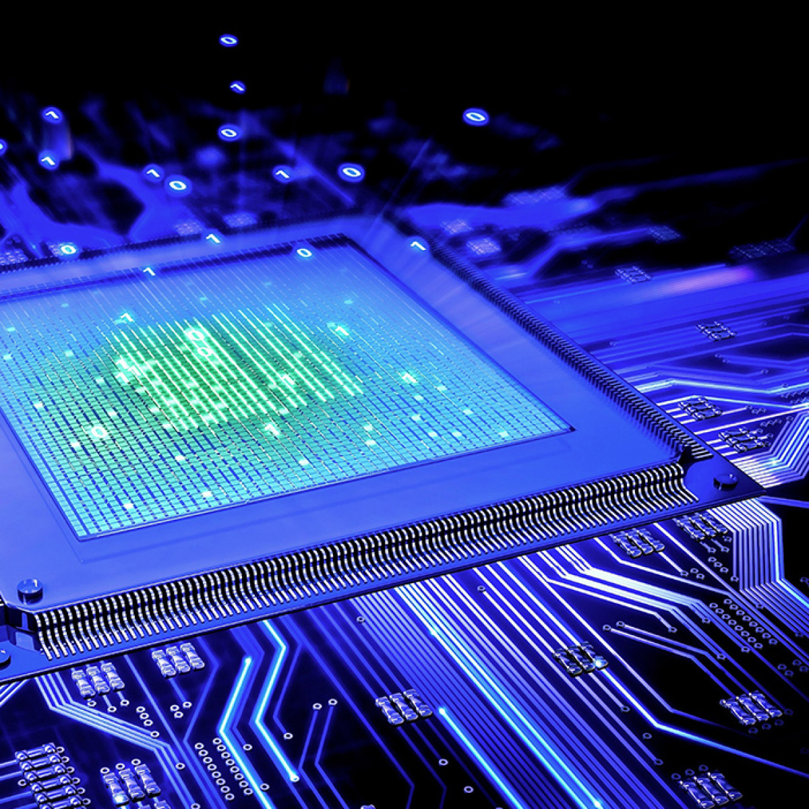

Мікропроцесор – це мікроелектронний програмований пристрій, що призначений для обробки інформації та керування процесами обміну цією інформацією у складі мікропроцесорної системи (комп’ютера).
Чому «мікроелектронний»? Тому що мікропроцесори виготовляються за допомогою технологій сучасної мікроелектроніки на основі напівпровідникового кристалу. Інформація в мікропроцесорній системі передається електричними імпульсами. Конструктивно мікропроцесор виконується у вигляді однієї мікросхеми (інколи – декількох). Мікросхема складається з пластикового або керамічного корпусу, всередині якого міститься мініатюрна напівпровідникова підкладка. На цій підкладці лазером «накреслені» усі електронні схеми мікропроцесора. Входи та виходи схеми на підкладці з’єднані з металевими виводами, що розташовані по боках або знизу корпуса мікросхеми.
Чому мікропроцесор – це «програмований пристрій»? Тому що мікропроцесорні системи взагалі є універсальними, тобто здатні виконувати широке коло завдань з обробки інформації. А на виконання конкретної задачі мікропроцесор «налаштовується» за допомогою програми – переліку машинних команд.